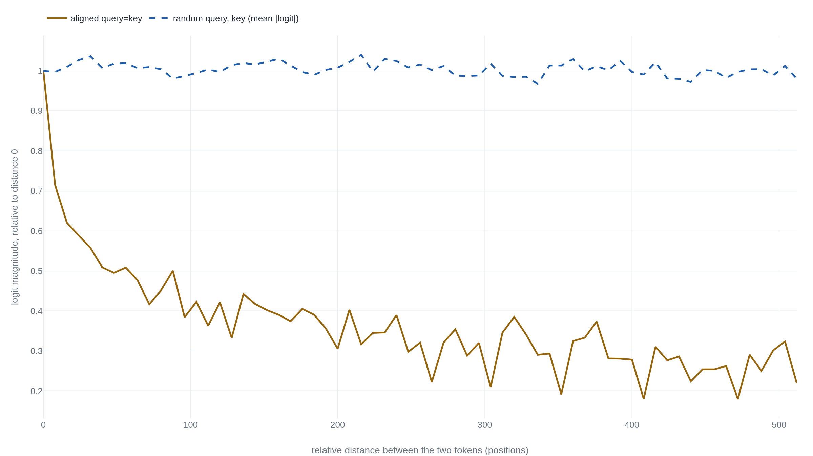

Two rotated vectors remember only the distance between them
Rotary position embeddings turn a token's index into a rotation angle, the mechanism behind most open-weight models' sense of where each token sits and behind the single-constant edits that stretch a model past its training length.
Attention has no idea where a token sits
Strip the position encoding out of a transformer and the attention score between two tokens is a dot product of their content vectors and nothing else. Permute the input and the set of scores comes back unchanged: self-attention is position-agnostic, so order has to be injected by hand.1 Two families did that job before rotary embeddings, and a reader should know them by name. The original transformer added fixed sinusoids of geometrically spaced wavelengths to each input embedding, and it also tried a learned vector per absolute index; the two scored nearly the same.2 Both hand the model an absolute address and leave it to discover that position 5 attending to position 2 is the same relation as 105 attending to 102.
Rotary Position Embedding (RoPE) makes that relation exact by construction.1 It rotates each token's query and key by an angle set by the token's index, and the rotation is arranged so the attention score between two tokens depends only on the gap between their positions. The claim is small enough to check in a dozen lines of array math. One fixed pair of vectors carries the whole argument: a query \mathbf{q} = (0.5,\,-1.0,\,2.0,\,0.3) and a key \mathbf{k} = (1.0,\,0.4,\,-0.7,\,1.5), four numbers each. Their plain dot product is -0.85, wherever the tokens land.
A rotation whose angle is the position
We want a map that carries a vector and a position to a rotated vector, such that two of them dotted together forget their absolute positions and keep only the offset. The smallest object that can rotate and still undo itself under a difference is the 2-D rotation, so RoPE splits a d-dimensional vector into d/2 coordinate pairs and turns pair i at a token in position m by the angle m\,\theta_i.
The angle grows linearly in the position, and each pair turns at its own rate \theta_i. Those rates are a fixed geometric schedule, not learned: \theta_i = 10000^{-2(i-1)/d} for i \in [1, \dots, d/2], with the base constant 10000 carried over from the sinusoidal scheme.1 The first pair rotates a full radian per step; the last barely moves, completing one turn only over tens of thousands of tokens. For the worked example, take the smallest head that still has two rates: d = 4 gives \theta_1 = 1 and \theta_2 = 0.01, one fast hand and one slow one on the same clock.
Where the absolute phase drops out
A rotation matrix has one property the whole scheme rests on: its transpose is its inverse, so composing a rotation by -m with a rotation by n leaves a single rotation by n-m. Push the query's rotation through the dot product onto the key and that is exactly what falls out.
- R_{m}the query's rotation, set by its absolute position m.
- R_{n}the key's rotation, set by its absolute position n.
- R_{n-m}what the two collapse to: one rotation by the gap between them.
Nothing about m or n survives on the right except their difference. The two prior families could only hope a model would learn this equivalence from data; here it holds identically, before any training, for every query and key.
Same gap, same logit
The construction is short enough to write as pure array math and read the offset property straight off its output. The rotation is applied pair by pair; the score is the dot product of a rotated query with a rotated key.
import numpy as np
def rope_freqs(d, base=10000.0):
i = np.arange(d // 2) # 0 .. d/2 - 1
return base ** (-2.0 * i / d) # one theta per 2-D pair
def rope(x, pos, base=10000.0):
ang = pos * rope_freqs(x.shape[-1], base)
cos, sin = np.cos(ang), np.sin(ang)
even, odd = x[..., 0::2], x[..., 1::2] # the two coords of each pair
out = np.empty_like(x)
out[..., 0::2] = even * cos - odd * sin # rotate every pair by pos*theta
out[..., 1::2] = even * sin + odd * cos
return out
q = np.array([0.5, -1.0, 2.0, 0.3]) # one fixed query, d = 4
k = np.array([1.0, 0.4, -0.7, 1.5]) # one fixed key
logit = lambda m, n: float(rope(q, m) @ rope(k, n))Evaluated at three token pairs three positions apart, the score is the same value to every digit numpy prints, and it changes the moment the gap changes.
| positions m, n | gap n − m | rotated logit |
|---|---|---|
| 2, 5 | 3 | −1.314201 |
| 7, 10 | 3 | −1.314201 |
| 100, 103 | 3 | −1.314201 |
| 3, 7 | 4 | −0.234807 |
| 9, 13 | 4 | −0.234807 |
| 0, 2 | 2 | −2.146777 |
Sweeping the shared shift across the first two hundred positions, the gap-3 score stays a single value, deviating by at most 1.1 \times 10^{-15} across the sweep: floating-point noise, not position dependence. The same two vectors, the same content, and the transformer reads them as near, then far, purely by where they sit relative to each other.
From four dimensions to a shipped attention head
A real model runs this on every head. Mistral-7B carries hidden size
4096 across 32 heads, so each head holds 128 dimensions, 64 rotated
pairs, and it turns them at exactly the toy's base:
rope_theta is 10000.0 in
the shipped config.3 The
rotation is applied only to queries and keys, never to values, and only
inside the attention score, which is why the piece could ignore the
rest of the transformer and still show the whole effect.4
Two production details the toy glosses are worth naming, because both
are traps. First, the pairing. The toy pairs adjacent coordinates,
(2i,\,2i{+}1), which is Meta's original
Llama convention: it reshapes each vector into consecutive pairs and
rotates them as complex numbers.4
HuggingFace's Llama instead splits the vector in half and pairs
coordinate i with coordinate
i + d/2, through the
rotate_half function every model in that ecosystem
uses.5
The two orderings are numerically different rotations of the same
vector; a checkpoint exported for one is made to match the other by
permuting the rows of the query and key projection weights at
conversion. A toy built one way is not drop-in against weights saved
for the other.
Second, the base is a tuning knob, not a constant. Llama-2-7B leaves it
at the 10000 default and trains on a
4096-token window.6
Llama-3-8B, same head geometry, ships
rope_theta at 500000.0,
fifty times larger.7 A
larger base slows every pair. It stretches the slowest wavelength from
roughly fifty-four thousand positions to over two and a half million,
so no pair completes a full turn inside the trained context. Nearby
offsets stay easy to tell apart. That single number is the seam the
context-extension work pries open.
What relative position does not buy
RoPE also weakens the score as tokens move apart, but the run shows the decay is available, not imposed. Scale the toy to a real 128-wide head and set query equal to key, the aligned case RoFormer bounds by Abel summation. Dotting that vector at position 0 against itself at a growing distance, the score falls to roughly a fifth of its starting magnitude across 512 positions.1 Average the same score over two thousand random query-key pairs and it barely moves. The frequency schedule offers a distance-decaying bound that a model can lean on; it does not force distant content to matter less.

chart-1.py.1
The oscillation matters as much as the fall. Decay is a rough envelope, not a clean monotone curve, because the low-frequency pairs are still mid-turn at these distances. This is also why the RoFormer abstract's "flexibility of sequence length" must not be read as long-context reach. Exact relative position is not the same property as useful extrapolation, and the two come apart in measurement. Trained at length 512, a rotary model keeps improving for only about 200 tokens beyond its window before perplexity climbs. That beats sinusoidal's 20 to 50 and still falls far short of free extrapolation.8
RoPE gives relative position exactly and for free. It does not give long context for free: a model trained at length L still degrades well before large multiples of L unless something changes the frequencies.8
What changes them is, in the end, that one base constant. The YaRN paper formalizes the fix as a single change to the base, tied to the length ratio s = L'/L.9 The move first circulated in mid-2023 as NTK-aware scaling, reported to extend LLaMA past its training window with no fine-tuning at all.10
rope_freqs from a
larger base b', stretching low
frequencies more than high ones.9
YaRN pairs that base change with a per-frequency schedule and a small temperature on the logits. It reports carrying Llama-2 from 4096 tokens to 128k by fine-tuning on roughly a tenth of a percent of the original pretraining tokens.9 Why a larger base helps is argued more than settled. YaRN motivates it through neural-tangent-kernel theory, as recovering high-frequency detail that uniform position rescaling would crush. That is a framing for a result whose success is measured, not derived from first principles. The change itself is a single constant. The account of why it works is still being written, a fair place to leave a scheme that is, at bottom, one rotation applied honestly.
Sources
- arXiv · Su et al., "RoFormer: Enhanced Transformer with Rotary Position Embedding" (2021)
- arXiv · Vaswani et al., "Attention Is All You Need" (2017)
- Hugging Face · Mistral-7B-v0.1 config.json
- GitHub · Meta, reference Llama implementation (model.py)
- GitHub · Hugging Face Transformers, Llama modeling code
- Hugging Face · Llama-2-7B config.json (NousResearch mirror)
- Hugging Face · Meta-Llama-3-8B config.json (NousResearch mirror)
- arXiv · Press, Smith, Lewis, "Train Short, Test Long" (ALiBi, 2021)
- arXiv · Peng et al., "YaRN: Efficient Context Window Extension" (2023)
- r/LocalLLaMA · bloc97, "NTK-Aware Scaled RoPE" (2023)